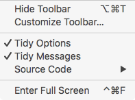
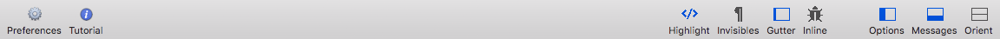

Balthisar Tidy has a very configurable display. To hide (or show) the Tidy Messages panel, follow the steps below.
Select Tidy Messages from the View menu. If the panel is currently visible you will see that is is checked. 
You can confirm that the menu item is now unchecked and the messages panel is hidden.
You can also easily toggle the visibility of the Tidy Messages panel using the Messages button on the document window’s toolbar. 